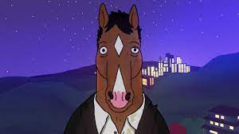

PERSONAJES
Bojack
BoJack Horseman, el caballo alcohólico, está interpretado por Will Arnett, actor canadiense conocido por su papel de Gob en ‘Arrested Development’. Su actor de doblaje es otro grande, Luis Bajo, conocido por ser Brian Griffin en ‘Padre de Familia’, además de la voz habitual de Charlie Sheen.
Todd

Todd Chávez, ese humano gandul que se aprovecha de BoJack mientras sueña con escribir su propia ópera rock, esconde detrás la voz del poderoso Aaron Paul, conocido por ser Jesse Pinkman en ‘Breaking Bad’. De su doblaje da cuenta Juan Amador Pulido, la voz habitual de John Krasinski, otra estrella de la comedia por su papel de Jim en ‘The Office’.
Diane
Y entre cómicos anda el juego, sin duda. Porque a Diane Nguyen, escritora en la sombra y amiga fiel de BoJack, la interpreta Alison Brie, popular por ser Annie Edison en ‘Community’. Un trabajo que dobla, en su versión castellana, Olga Velasco, habitual de actrices como Olga Kurylenko o Emily Blunt.
Princesa carolyne

Por su parte, la Princesa Carolyn, la gata persa y fiel agente, es interpretada por Any Sedaris, cómica, guionista y actriz conocida por sus trabajos en ‘School of Rock’ o ‘Sucedió en Manhattan’. Aquí en España se mete en su piel Ana Jiménez, conocida por su trabajo como Serena en ‘Gossip Girl’.
Sr.Peanutbutter
Finalmente, el Sr. Peanutbutter, ese labrador retriever que admira y emula a BoJack, pero que él desprecia con todas sus fuerzas, toma la voz de Paul F. Tompkins, maestro del stand up. Aquí es interpretado por Eduardo del Hoyo, muy popular por sus doblajes de Zachary Quinto en ‘Héroes’ y que ganó popularidad interpretando a Christian Bale en ‘American Psycho’.